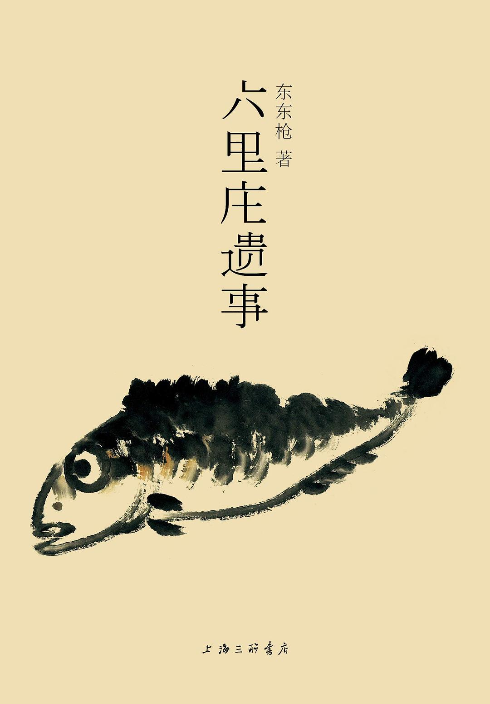

《六里庄遗事》

总体观点
采用“伪笔记小说”形式，全书由数百条长短不一的杂记、掌故、对话、碑铭汇聚而成，打破传统长篇小说的单线结构，拼贴出一幅荒诞而真实的唐代微型市民社会浮世绘。
相声曲艺的留白包袱与古典文学的幽微雅致无缝咬合，表面上是市井俗人的插科打诨与痴人说梦，内核却是对时间流逝、生死无常与碌碌一生的宿命悲悯。
六里庄不仅是地理概念，更是所有被宏大历史叙事遮蔽遗忘的普通人的精神寓所：王小二、沈三变、皮里阳秋各怀心事，在鸡零狗碎中打捞微茫的欢喜与叹息。
核心观点
-
1. 伪志书体裁的先锋实验：虚构档案中的真实温度
东东枪以一本正经的史料考据笔调记录荒诞不经的乡野碎事，用煞有介事的伪考据解构了宏大正史的庄严感。
记载庄中无赖‘王小二’的一生，仅用数十字罗列其从年轻时偷鸡摸狗到老年坐看落日的平庸流水账，却令人莫名鼻酸。 -
2. 语言的曲艺美学：京味相声与唐宋笔记的奇妙化学反应
将中国北方说唱曲艺中的‘贯口’、‘三翻四抖’与《世说新语》《容斋随笔》般的洗练文言融为一体，创造出别具韵味的文本声调。
庄中私塾先生与算命瞎子的对骂，既有文绉绉的引经据典，又透着市井胡同特有的机锋与狡黠。 -
3. 小人物的无用之美：对抗功利时代的荒诞诗意
六里庄的居民们往往终日忙碌于毫无实际功利价值的偏执爱好：捉蟋蟀、猜谜语、画无头鬼，在无意义中安顿肉身。
沈三变倾尽半生家当，只为研制一种在冬夜雪地里能发出‘咯吱’脆响却不湿鞋的木屐，造出后却随手送给了路过讨饭的乞丐。 -
4. 繁华散尽的苍凉底色：盛唐背影下的荒丘孤冢
故事看似欢闹跳脱，但字里行间无不弥漫着时光飞逝、朋辈凋零的宿命感，每一次街头偶遇都暗含着生离死别的前奏。
昔年酒楼上指点江山、豪掷千金的落魄文人，数十年后不过是六里庄外乱葬岗上一抔无名黄土，惟余野草萧萧。 -
5. 民间哲学的通透自洽：在庸常琐碎中求得半日欢喜
面对兵荒马乱与赋税徭役，六里庄的百姓自有一套‘好死不如赖活着’的生存哲学，以自嘲消解磨难，守住心底方寸温良。
杂货铺掌柜在遭劫破产后，依然在废墟旁支起小炉子煮一壶粗茶，笑着对街坊说‘至少今天省了看店的功夫’。
全书结构
-
卷一：里人纪事（六里庄名录与众生百态）
详尽记述六里庄常住人物的姓名、营生、外号与生平轶事，描摹庄中小贩、教书先生、屠户与神棍的鲜活嘴脸。
记述‘皮里阳秋’贾秀才，一生考场失意却精通全庄鸡鸣犬吠的规律，靠给邻里听风辨天维持生计。 -
卷二：四时风物（岁时节令与集市烟火）
依春夏秋冬顺序记录六里庄的物候变迁、庙会杂耍、茶楼书场与吃食风味，勾画出一幅生机勃勃的唐代乡村风俗画卷。
描写重阳节庄人登高饮菊花酒，老少爷们在山坡上互掷茱萸囊取笑打闹的欢腾场景。 -
卷三：闲言琐语（柳下无聊对话与语言狂欢）
辑录里人们在井台边、树荫下漫无边际的闲聊扯淡；语言极尽相声包袱之能事，机趣横生却句句透着人生大智慧。
两人就‘到底是先有叫花子还是先有叫花鸡’争辩整整三个时辰，最终在日落时分相约去馆子吃一碗烂肉面作结。 -
卷四：市井奇谭（狐仙野鬼与江湖幻术）
收录六里庄世代相传的灵异志怪传闻，神仙鬼怪往往毫无架子，与凡夫俗子同桌饮酒赌钱，充满人情味与讽刺锋芒。
某夜来庄中借宿的狐妖因在赌坊输光了变出的铜钱，被扣押在豆腐坊磨了三年豆腐抵债。 -
卷五：故人行略（半生浮沉与墓石残铭）
笔调转入沉郁苍凉，追述核心人物晚年的凄清结局与生死离散，将热闹繁华的市井生活收束于荒烟蔓草之中。
曾经名震长安的乐师晚年流落六里庄街头吹破笛子，死后墓碑上只刻着生前常说的三个字：‘何必呢’。 -
附录：六里庄考略与舆图题记
东东枪模仿古代方志编撰体例虚构的舆图总说、历代修撰序跋与残存石刻考释，以假乱真，极尽文人幽默与怀古幽思。
作者煞有介事地考订庄东头歪脖柳树的树龄，考证到最后得出结论：‘其实谁也记不清，倒了也就倒了’。